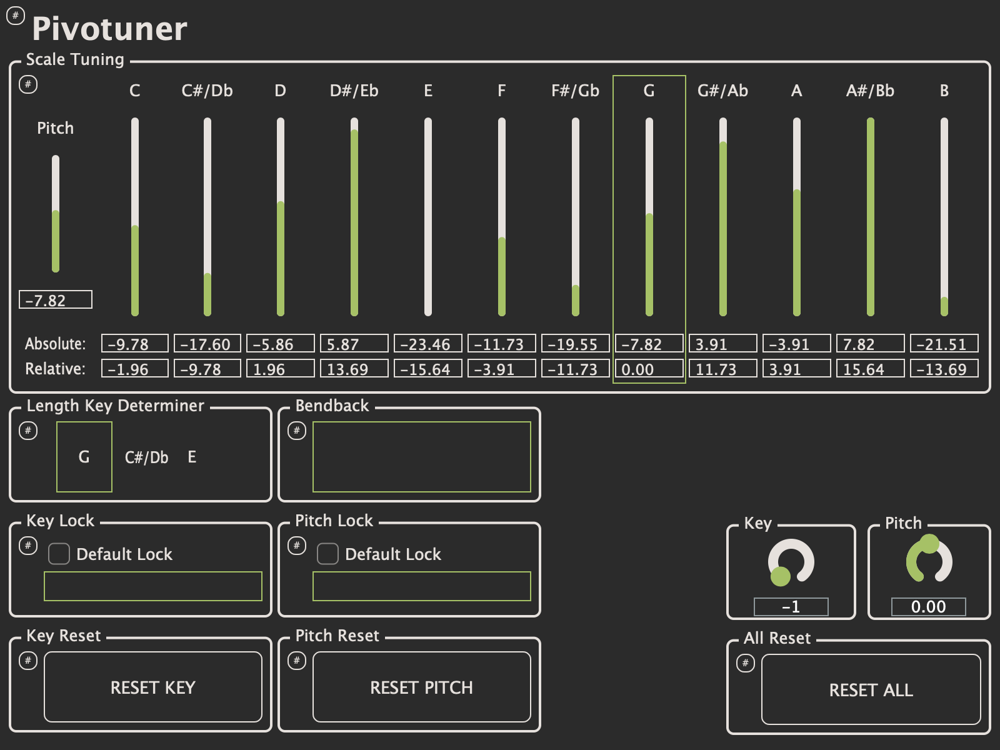

Pivotuner
Pivotuner: automatic real-time pure intonation and microtonal modulation
Click here to get Pivotuner!
Pivotuner™ is a plugin which tunes MIDI data in pure intonation in real time. Besides enabling beautiful purely-tuned chords on keyboards, this also enables many other cool things such as microtonal modulation, and unusual chord sonorities!
Pure intonation and microtonal modulation are incredibly powerful musical devices, as exemplified by Jacob Collier's arrangements of In the Bleak Midwinter and Moon River, which pioneered their use! Pivotuner is heavily inspired by these arrangements, and aims to bring microtonal modulations to a wider audience!
Most keyboard instruments of today are tuned to equal temperament. While straightforward and practical for a wide variety of situations, equal temperament results in chords that the ear does not perceive as completely in-tune. Furthermore, standard equal temperament limits musicians to only 12 pitch classes (pitches per octave), when the human ear is capable of hearing closer to 343 pitch classes. Pivotuner solves both of these problems, while still allowing musicians to think in the 12-note framework they are accustomed to!
Pivotuner's algorithms are based around the idea of "pivot notes" or "keys" in purely-tuned chords: notes to which all notes other notes are tuned according to pure intervals. For example, the chord C# in the chord {A4, C#5, E} would be tuned ~13.69 cents flat compared to equal temperament, so that the frequency ratio between C#5 and A4 would be ~5/4 (a pure major 3rd). If the key then shifts to C#5, all notes would be tuned relative to this C#5, which is ~13.69c flat, meaning we have microtonally modulated down ~13.69c! This sort of process can be chained for larger modulations!
Sometimes microtonal modulation is undesirable; sometimes we want to stick to a single key, or a single pitch center. Pivotuner can lock keys (which prevents microtonal modulation and enables unusual sonorities; tuning a F major triad to the key of D sounds quite interesting), and the pitch (which prevents microtonal modulation while still allowing chord tuning to shift)!
Pivotuner also has plenty of customization options, including the ability to fine-tune which intervals are used for tuning (there are at least three different ways to purely tune a minor 7th), as well as multiple tuning algorithms!
"AAAAAA I JUST MADE A CROSS TERRAIN MODULATION IN LIKE A FIFTH OF THE TIME IT USUALLY TAKES ME THIS IS CRAZYYYYYY" ~Jordan Olson
Huge thanks to Ben Bloomberg and Jacob Collier for their help with Pivotuner!
Click here to watch a demo video!
Pivotuner Jamming, by Israel Strom
Excerpt from untitled2, by sporkl (me)
More example and tutorial videos are available here: https://youtube.com/playlist?list=PLWgV6cfPuuQVsNRsXxNOicKQokAPJPYhR
Click here to download the Pivotuner Guide!
Click here to get Pivotuner!
Support email: dmitri.s.volkov@gmail.com
If the cost of Pivotuner is prohibitive for you, please contact me.

All content copyright (c) Dmitri Volkov 2022 unless otherwise noted.